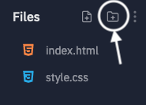
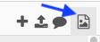

Assignment #4: HTML Me Something¶
You’ve learned a bit of HTML and some CSS as you added or modified content in exercises or pre-existing files. In this assignment, you are going to take the next step by building an entire page from scratch!
There are two parts to this assignment, one focused on HTML and another on CSS. HTML makes up the structure and content of web pages, while CSS sets the visual style.
As a best practice, developers often keep the content and style as separate as possible. With this in mind, you will build the HTML portion of your page first. In the second half, you will add styling to the page with CSS.
Tip
Try to avoid using HTML tags to change the general appearance of your
pages! For example, what if you want all of your section headings to be
red? You can either add this style one time in the CSS file, or you must
include style="color:red" in EVERY h2 tag.
Especially for large websites, CSS provides the best way to control the overall appearance of a page.
Sections¶
Getting started¶
Login to your Trinket or repl.it
account. Open a new HTML/CSS project and call it HTML Me Something.
Repl.it Users¶
When you open a new HTML project, repl.it gives you some standard code in the
index.html file:
1 2 3 4 5 6 7 8 9 10 11 12 | <!DOCTYPE html>
<html>
<head>
<meta charset="utf-8">
<meta name="viewport" content="width=device-width">
<title>repl.it</title>
<link href="style.css" rel="stylesheet" type="text/css" />
</head>
<body>
<script src="script.js"></script>
</body>
</html>
|
This is a good starting place, but you should make some minor tweaks before diving into Part 1.
- Change the text in the
titleelement to describe the page you want to build. - Remove the
scriptelement from line 10. - You can also delete
script.jsfrom the file tree on the left hand side of the workspace.
You’re good to go!
Trinket Users¶
After naming your new HTML project, you will see an empty editor. Before starting Part 1, do the following:
- Paste in the same repl.it code shown above. Also, make the first two minor tweaks.
- In the toolbar above the editor panel, click the
+button to add a new file. Name this filestyle.css.
You’re ready to go!
Part 1: HTML¶
In Part 1, you will build the structure and content for your webpage. All of
your work for this part will go inside the body element of the
index.html file.
Requirements¶
Your mission is to build a page that:
Tells a story. This can be personal or impersonal, funny, serious or neither. You can do whatever you like, but it must be school appropriate. Here are some ideas you can consider:
- Describe a trip you took.
- Talk about one of your hobbies or passions.
- Provide an alternate ending or plot twist to a book you read. (For example, now’s your chance to change Prim’s fate in Mockingjay).
Tip
Check out this example page created by a member of LaunchCode.
Includes 3-10 total paragraph elements. The page should also contain at least 4 different sections.
Example
A section is a set of HTML elements nested inside block-level tags like
<section>, <article>, <header>, <footer>, etc. Sections allow you to divide your webpage into distinct regions.The code below shows two sections (lines 1 - 9 and lines 5 - 8).
1 2 3 4 5 6 7 8 9
<article> <h2>Heading...</h2> <p>Content...</p> <p>Content...</p> <figure> <img src="..." alt="..."> <figcaption>Text...</figcaption> </figure> </article>
Creating sections now will help you style your webpage in Part 2.
Uses each of the following semantic tags:
<p>,<header>,<h1>,<footer>,<main>,<article>. If you need to review any of these tags, check out the HTML tag reference at W3Schools.You are NOT limited to just these 5 tags! Feel free to include any other semantic tags you need or want.
Includes one or more
<img>tags. (See Uploading Images below).Uses at least one HTML entity. Hint: Putting a copyright notice in your footer will take care of this, but feel free to use your imagination (and emojis).
Demonstrates creativity. Don’t stop with the required items or tags. Add some extra ideas to your page to make it great.
Part 1 Tips¶
- Right-click inside the example page and View Page Source to see some ideas about how you might arrange your own HTML elements. However, do NOT just copy/paste! Build your page to fit your own content.
- Don’t add any CSS yet. Really, we mean it! If you think your page looks boring without any style rules, that’s okay. You will fix that in Part 2.
- Use the HTML references linked on this page, or find others online. We haven’t taught you every detail about every tag that you may want or need.
- You’re free to use tags that haven’t been introduced in class! We’ve given you enough background to get started, but you are more than ready to do some learning on your own.
Halfway There¶
You finished Part 1. Copy the link to your repl.it or Trinket file and share it with your teacher.
You will complete the second half of this project once you reach the end of the CSS chapter.
Part 2: CSS¶
In Part 2, you will use CSS selectors and style rules to control what your page looks like. Remember, the goal is to keep your styling separate from your content.
When you first created this project, you added a style.css file. Click on
its name to open it in the editor. Right now, it should be empty. Most of your
code for Part 2 will go inside style.css.
Now start adding some CSS rules.
Requirements¶
Be creative! Make your page look great, and don’t just settle for checking off the items from this requirements list.
Use at least one of each of the following selectors:
Remember,
classandidselectors require you to add attributes inside a starting tag.Avoid adding HTML elements in order to achieve a specific visual effect. Do ALL of your styling with CSS.
Include margin and padding in the declaration blocks to space your elements in a visually pleasing way.
Use inline
styleattributes only when absolutely necessary.
Part 2 Tips¶
- In order to see any visible change, make sure to link
style.cssto yourindex.htmlfile. - Feel free to check out our styled example
to see how we did things. Right-click anywhere on the page and select
View Page Source. In the tab that opens, click on the
style.csslink on line 8. - To explore more styling properties, check out the W3Schools CSS Reference.
Done!¶
Take a moment to gaze with pride at your webpage. Feel free to show it off a little.
Follow your teacher’s instructions for how to turn in your finished project.
Uploading Images¶
The repl.it and Trinket platforms both allow you to add images to your HTML projects. While the processes are similar, they are not identical.
Repl.it Images¶
In the file tree on the left side of the workspace, click the Add Folder button.
Call the new folder
images.Drag and drop the images you want to use into this folder.
To display an image on your webpage, use the
srcattribute inside theimgtag. The syntax is:<img src="images/image_file_name" alt="Text description...">
image_file_namemust include the file extension (.png,.jpg, etc.).
Trinket Images¶
In the toolbar on top of the editor, click the Add Images button.
Click on the Image Library button, then Upload New Image.
Once you upload a new image, its thumbnail appears in the space below the buttons. Select the images you want to use, then click Done.
To display an image on your webpage, use the
srcattribute inside theimgtag. The syntax is:<img src="image_file_name" alt="Text description...">
image_file_namemust include the file extension (.png,.jpg, etc.).
{kind=link}
(Back to Part 1)